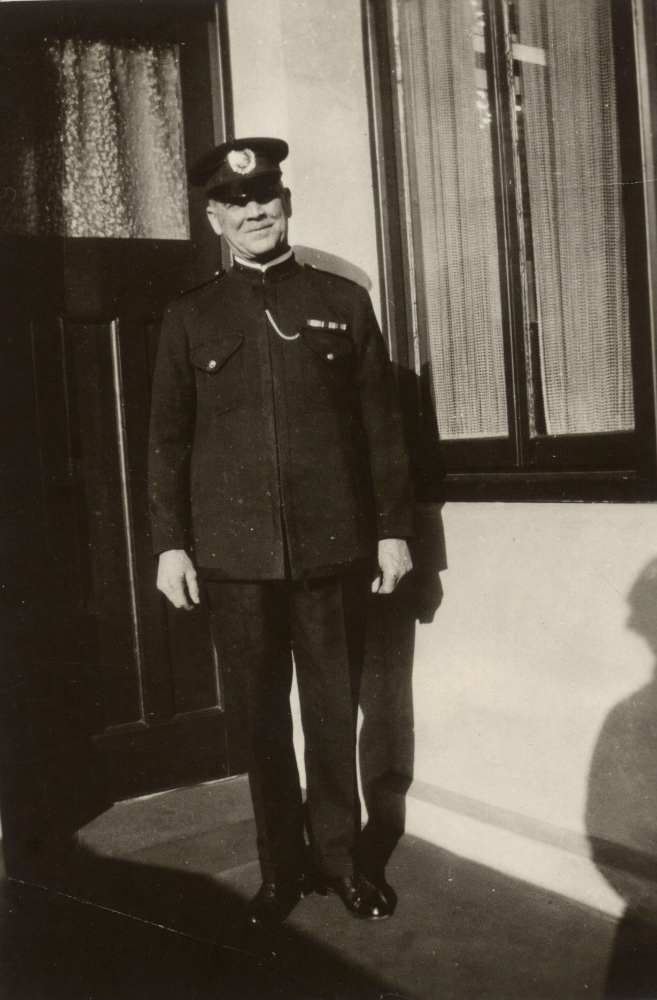
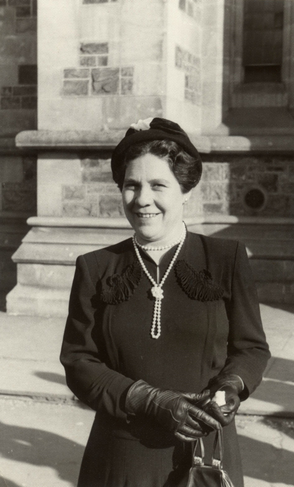
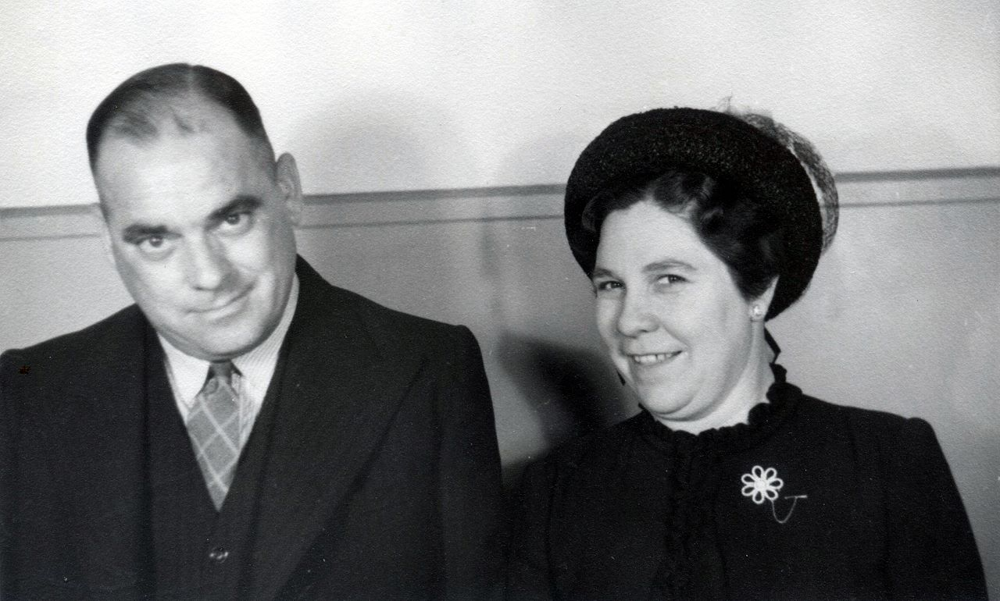
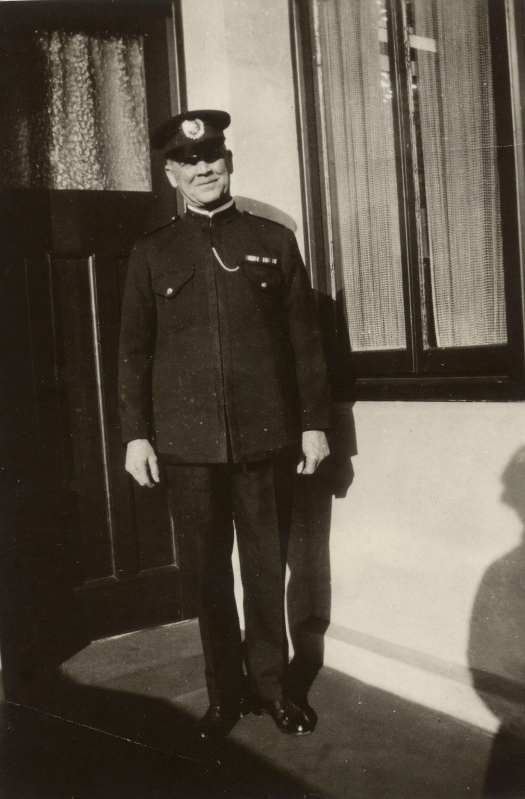
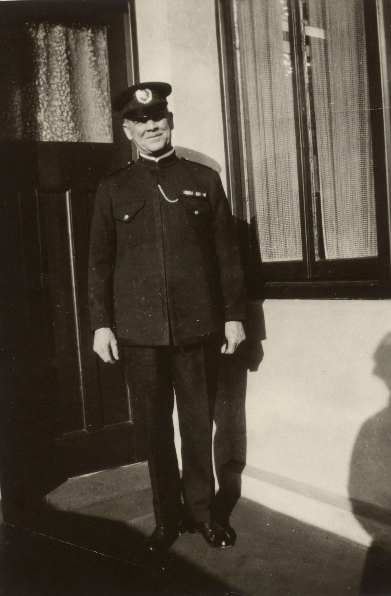
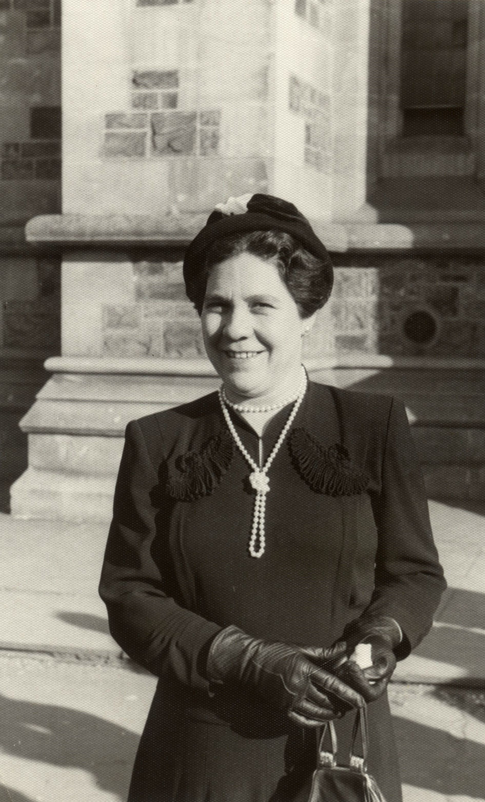
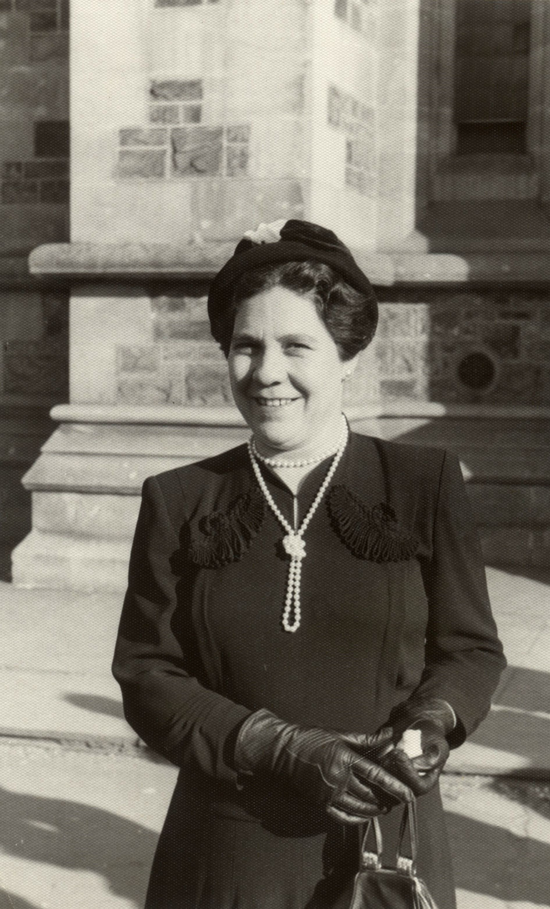
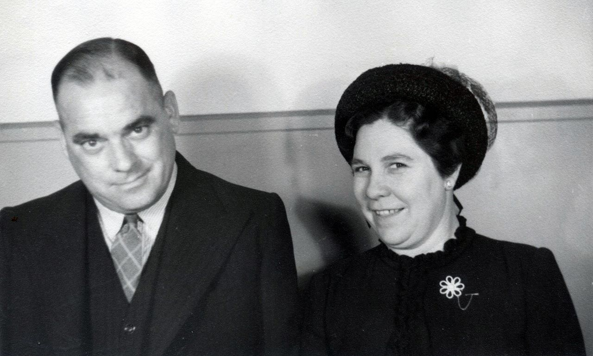
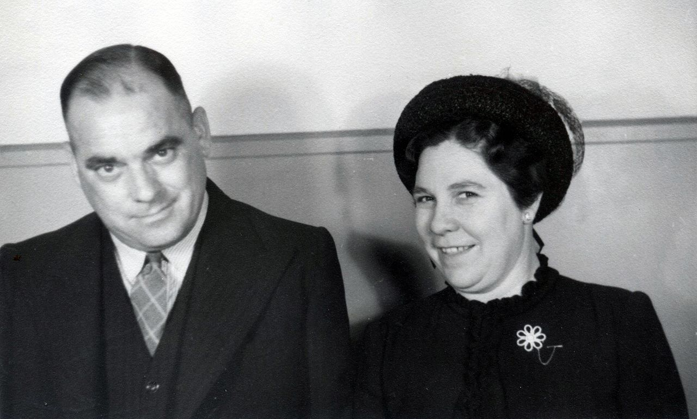

Jarvis family tree

Edward JARVIS b 1810 m (1828) Jane ROBERTS
-
William JARVIS b 1829
-
Mary JARVIS b 1833
-
John JARVIS b 1830
-
![[X]](jarvis-tree/images/square_16x16.JPG)
![[X]](jarvis-tree/images/blue_16x16.JPG)
 Joshua JARVIS b 1832 d 1877
m (1855)
Mary Ann BARRETT b 1839 d 1913
Joshua JARVIS b 1832 d 1877
m (1855)
Mary Ann BARRETT b 1839 d 1913

-
Edward JARVIS b 1858 d 1917
m (1903)
Mary MALONE (nee ROBERTS) b 1861 d 1950
-
Mary Ellen JARVIS b 1904 d 1998
m (unknown)
Vinrace Wilton HOWIE b 1898 d 1985
- Joan HOWIE b 1923 m (1944) Nicholas HASKETT
- Monica Joan HASKETT b 1945
- Mary Bernadette HASKETT b 1947
- Anthony James HASKETT b 1953
- Claire Margaret HASKETT b 1955
- Peter Damien HASKETT b 1959
- Ronald HOWIE b 1928 m Mary
- Mary Terese HOWIE
- Bernard John HOWIE
- Gerard HOWIE
- Denise HOWIE b 1933 m Paul Francis McNAMARA
- Angela McNAMARA
- Paul McNAMARA
- Catherine McNAMARA
- Bernard McNAMARA
-
Ellen Maria JARVIS b 1860 d 1952
m (1887)
John Mackrell PHILLIPS b 1860 d 1932

-
Joshua John JARVIS b 1862 d 1885
-
Emma JARVIS b 1864 d 1958
m (1902)
Henry DUELL b 1877 d 1955
- Gertrude Claire DUELL b 1905 m Russell HELPS
- Melva
-
Amanda JARVIS b 1867 d 1940
m (1890)
Harry SMART b 1863 d 1945

-
Arthur Harold JARVIS b 1868 d 1942
m (1891)
Eliza Jane JAMES b 1867 d 1955

-
Keith JARVIS b 1891 d 1916

-
Harold Arthur JARVIS b 1894 d 1956
m (1917)
Isabel (known as Belle) WHITING b 1899 d 1957
- Margaret (known as Peggy) JARVIS b 1918 m Adrian OTTOWAY
Five children


-
Eric Roy JARVIS b 1896 d 1967
m (1920)
Alice May SCOTT b 1889 d 1995


- Keith Scott JARVIS b 1923 m (1949) Shirley Mary SANDERSON
- Lynn Robert JARVIS 1949 m Carol Ann BUNN 1955
- Robert Scott JARVIS 1984
- Coralie Gail JARVIS SANDERSON 1953
with partner Graham BIRD
-
Elly BIRD 1976
with partner Stephen GARDNER
-
Jane GARDNER 1983 m (2016) Joel BROWN
-
Felix Alexander BROWN 2018
- Ian Scott JARVIS 1961 m Cathryn Anne ABBOTT-YOUNG 1963
- Alice Rose JARVIS 1992
- Emma May JARVIS 1997
Remarried Anne Warnes BLACKMAN
- Emma Kate BLACKMAN 1991

- Shirley JARVIS b 1926 m Gordon SORENSEN
- Kerryl SORENSEN
- Meredith SORENSEN
- Rosemary SORENSEN
end Eric Roy JARVIS

-
Reginald Lancelot JARVIS b 1899 d 1983
m (1923)
Eunice HARRIS b 1899 d 2004
- Marjorie - Margaret JARVIS m (1923) Peter MINNIS
- Melva Ruth MINNIS m ??? Walter b 1962
- Kaija WALTER
- Margaret Jean MINNIS b 1954 m Andrew STEPHENS
- Tabatha STEPHENS
- Skye STEPHENS
- Andrew Peter MINNIS b 1954 m ???
- Nathan MINNIS (Kathleen ??)
- Melissa MINNIS
- Michael MINNIS
- Elizabeth Jane MINNIS b 1957 m ??? NICHOLS
- Simon NICHOLS
- Peter NICHOLS
- Andrew NICHOLS
- Judith Naomi MINNIS b 1963 m David HUDDLESTON
- Scott HUDDLESTON
- Ronald Harris JARVIS Dr, b 1925 m (1951) Jean PATERSON
- Hugh Alexander JARVIS b 1952 m Susan Florence WHITE
- Mark Douglas JARVIS b 1978
- Kathryn Jane JARVIS b 1980
- David Andrew JARVIS b 1953
- Catherine Ann JARVIS b 1956
- Lesley Alexandra Dr JARVIS b 1957 m (1981) Paul John WHITBREAD
- Emma Alexandra WHITBREAD b 1997
- Thomas Jordan WHITBREAD b 1999
-
Christopher John JARVIS b 1959
- Kay JARVIS b 1940 M Graham POTTER
- Amanda PEARSON b 1948 - father Ronald PEARSON
- Susan PEARSON b 1952 - father Ronald PEARSON
end Reginal Lancelot JARVIS

- Leslie Douglas JARVIS b 1904 d 1984 m (1922) Helen Kathleen ROBSON
- Leslie David JARVIS b 1922 m (1945) Miriam Ann SLADE
- Mark James JARVIS b 1949 m (1983) Jennifer COTTON
- Melanie Catherine JARVIS b 1977 (mother Helen PEDLER)
- Ben JARVIS b 1980
- Hayley Amanda JARVIS b 1984
- Tom Alexander JARVIS b 1988
- Anne Kathleen JARVIS b 1951 m (1974) Allan LOVELL
- David Alan LOVELL b 1977
- Ben Adam LOVELL b 1980
- James William LOVELL b 1985
- Helen Catherine JARVIS b 1924 m (1945) Stewart David BROUGHAM
- Susan BROUGHAM b 1948 m (1973) William Patrick ROCHE
- David Patrick ROCHE b 1974
- Claire Elsie ROCHE b 1976
- Charles Howard ROCHE b 1978
- Julian Thomas ROCHE b 1979
- Melanie BROUGHAM b 1949 m Ralf BAULCH
- Tara Catherine BAULCH b 1975
- Oliver BAULCH b 1980
- Miles BAULCH b 1982
- Lewis BAULCH b 1985
- Alison BROUGHAM b 1953 m John Harry MAYFIELD
- Anthony John MAYFIELD b 1977
- James Stewart MAYFIELD b 1980
- Lana Elsie MAYFIELD b 1985
- Andrew Stewart BROUGHAM b 1955 m Caroline Leslie WELLS
- Melanie Caroline BROUGHAM b 1977 (twin)
- Tanya Alice BROUGHAM b 1977 (twin)
- Hugh Andrew BROUGHAM b 1979
- Jessica Helena BROUGHAM b 1982
- Harriet Kate BROUGHAM b 1983
- Charlotte Brogham b 1985
- Julia Magdalene BROUGHAM b 1987
- George BROUGHAM b 1990
- Peter James JARVIS b 1932 m (1952) Beryl Margaret ARTHUR
- Jennifer Patricia JARVIS b 1952 m Arthur Henry BOULTON
- Daniel John JARVIS BOULTON b 1974
- Cameron Richard BOULTON b 1977
- Tracey Judith BOULTON b 1979
- Steven JARVIS b 1955 m Rosemary MITCHELL
- Nuin Tara JARVIS b 1982
end Leslie Douglas JARVIS


- Marjorie Alice Edith JARVIS b 1909 d 1995 m (1934) Gordon MILKINS
- Lillian SCOTT b 1918
end Arthur Harold and Eliza Jane (James) JARVIS

- Edith Mary JARVIS b 1870 m George COMBE
- Lorna Mary COMBE b 1908 m Jack CARLIER
- Robert CARLIER
- Rita Edith COMBE b 1909
-
Un-named b 1873 d 1873
-
Walter Stephen JARVIS b 1877 d 1969
m (1894)
Adelaide Matilda POLKINGHORNE b 1873 d 1965
- Edith Maude JARVIS b 1894 d 1971 m (1928) Sidney Charles MILLARD
- Kevin MILLARD
- Rita MILLARD
- Lindsay MILLARD
- Allan MILLARD
- Margaret MILLARD
- Basil Clarence JARVIS b 1896 d 1976 m (1927) Elizabeth MCCALLUM
- Cora JARVIS
- Audrey JARVIS
- Heather JARVIS
- Matthew JARVIS
- Florence May JARVIS b 1898
-
Frances Pearl JARVIS b 1900 m (1923) Johan Heinrich WILLIAMS
- Ethel Gladys JARVIS b 1902
- Sydney George JARVIS b 1905 d 1993 m Olive Jean WHITTLSEA b 1913 d 1999
- Roger Leith JARVIS b 1943 d 1943
- Wiliam Walter JARVIS
- Mary Adele JARVIS
- Leonard Jack JARVIS
end Walter Stephen JARVIS
end Joshua JARVIS
![[X]](jarvis-tree/images/arthur-pa-jarvis.jpg) 

![[X]](jarvis-tree/images/eliza-jinnie-james.jpg)
![[X]](jarvis-tree/images/Eric-Roy_PMG-Dept-Engineers-Branch-Adelaide.jpg)
![[X]](jarvis-tree/images/marjorie-milkins.jpg) 

![[X]](jarvis-tree/images/gordon-and-marj-milkins.jpg) 

![[X]](jarvis-tree/images/Walter-Jarvis.jpg)